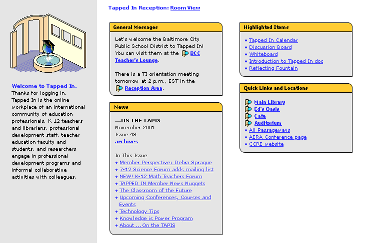
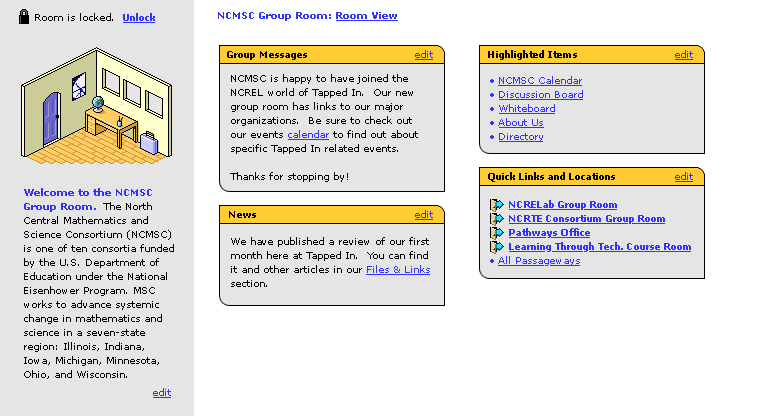
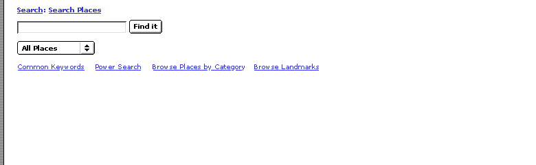

Here is the content for a standard room. Sublinks (on menu of topnav) are repeated in various categories in the yellow boxes.
This is an administrator's view of their group room. Additional items (about us, directory) are available without having to add items to the standard room subnav (not shown here).
This is simple; an example of a search content frame. Notice the grey bar along the left side; this is because it is an "overlay" on top of the current room (will be more evident when the all these parts are put together).
